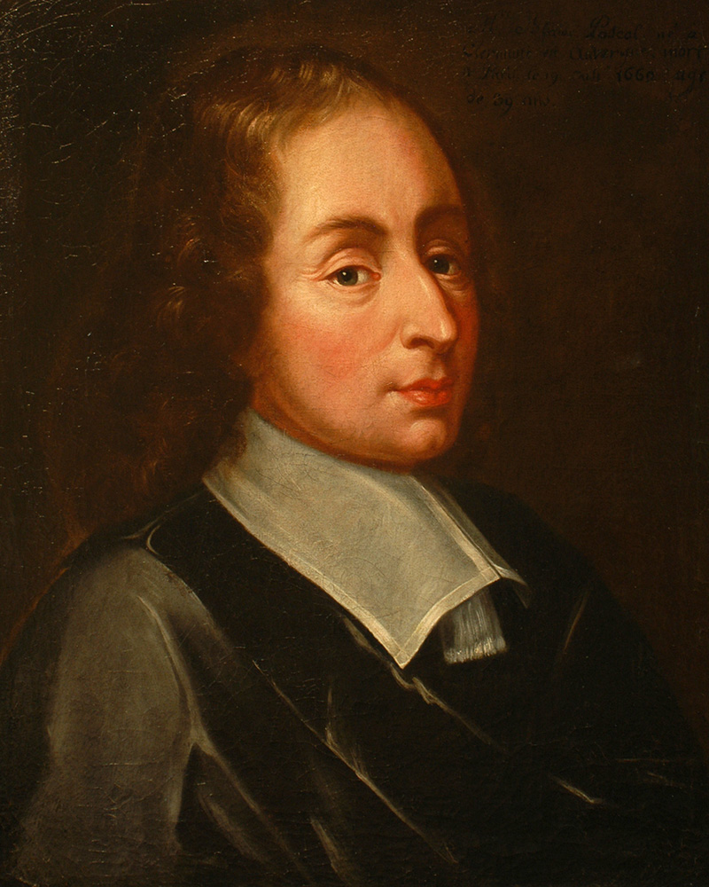

The Verification of Atmospheric Pressure
Blaise Pascal, a French mathematician and physicist, expanded upon Torricelli's discoveries in 1648. He conducted experiments demonstrating that atmospheric pressure decreases with altitude.
Pascal’s most notable experiment involved his brother-in-law, Florin Périer, carrying a barometer up the Puy de Dôme mountain in France. They measured the mercury column’s height at various elevations and observed it dropped as the barometer ascended, proving that air pressure diminishes with altitude.
These findings confirmed the concept of a measurable atmospheric pressure gradient, laying groundwork for advances in meteorology and aerodynamics. Today, the unit of pressure, the pascal (Pa), is named in his honor.
